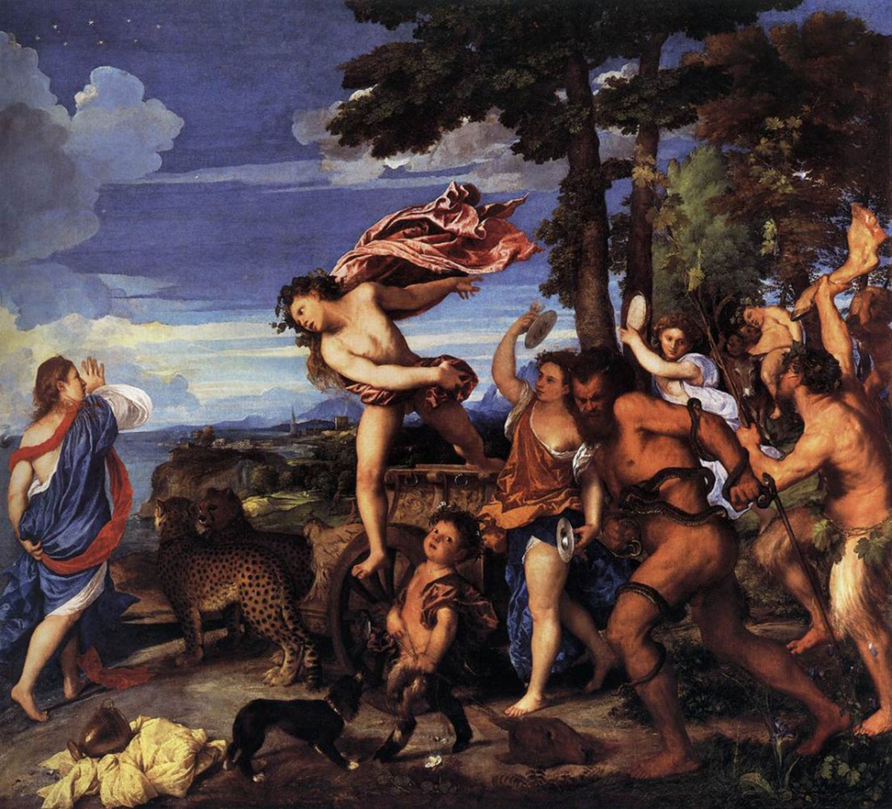

Au travers des âges
L'histoire de Thésée, de Minos, de Dédale, d'Icare, d'Ariane et du Minotaure a inspiré les artistes depuis des milliers d'années. Pour la raconter, ils ont écrit des livres, bien sûr, mais ils ont aussi peint des tableau, sculpté des statues, fait des poteries, tourné des films ou créé des jeux vidéo. Les derniers à avoir interprêté l'histoire, c'est nous, avec le livre numérique que tu tiens entre les mains.
Thésée contre
le Minotaure
Ce vase date de 460 avant Jésus Christ. A cette époque, l'art de la poterie était très développé chez les grecs. Ils s'en servaient pour conserver de l'huile, du vin et toutes sortes d'aliments.
Vase datant de 460 avant JC : le combat de Thésée et du minotaure
Le minotaure et Pasiphaé
Cette représentation date de 340 avant Jésus Christ. Les grecs représentaient l'histoire avec humour : observez la mine mécontente de Pasiphaé alors qu'elle s'apprête à donner le sein à son bébé !
Detail, 340 avant JC : Le minotaure avec sa mère, Pasiphaé
"Bacchus et Ariane"
de Titien
Bachus est l'autre nom de Dyonisos. Après une pause pendant le moyen âge, les artistes du 16ème siècle redécouvrent les histoires grecques. En 1520, Titien peint cette toile représentant la rencontre de Dyonisos et d'Ariane. Vous pouvez la voir à la National Gallery, à Londres
Titien, Bacchus et Ariane, 1520-1523, National Gallery, Londres

"Bacchus et Ariane"
de Sebastiano Ricci
Tout au long des siècles, les peintres multiplient les représentations de l'histoire mais en apportant à chaque fois leur touche personnelle. Dans cette toile peinte en 1710, Dyonisos découvre Ariane alors qu'elle est endormie et on a presque l'impression d'être plongé dans le rêve de la princesse crêtoise.
Sebastiano Ricci, Bacchus et Ariane, 1700-1710
"Thésée retrouve l’épée
de son père"
de Nicolas Poussin
Quand Nicolas Poussin peint ce tableau en 1638, il s'intéresse autant à la scène et aux personnages qu'aux décors et à la représentation des monuments. Vpus pourrez voir cette toile au chateau de Chantilly, près de Paris.
Nicolas Poussin, Thésée retrouve l’épée de son père, huile sur toile, vers 1638, 98x134, musée Condé, Chantilly
"Thésée combattant le minotaure"
de Étienne-Jules Ramey
Il n'y a pas que les peintres qui s'intéressent à l'histoire de Thésée. Vous pourrez admirer cette statue en marbre, réalisée en 1826, dans le jardin des Tuileries, à côté du Louvres, à Paris.
Étienne-Jules Ramey (1796–1852), Thésée combattant le minotaure. Marbre, 1826 ; Jardins des Tuileries, Paris
"La Chute d'Icare"
de Rubens
L'histoire de ce pauvre Icare a également inspiré bien des artistes. Rubens, en 1636, montre le malheureux jeune homme en train de tomber, sous le regard désespéré et impuissant de son père.
Rubens, La chute d'Icare, 1636
"Icare"
de Henri Matisse
Au 20ème siècle, les artistes prennent davantage de libertés avec l'histoire. Matisse, en 1952, présente un Icare qui semble nager au milieu des étoiles, comme s'il ne devait jamais tomber.
Henri Matisse, Planche au pochoir d'après les gouaches et sur les découpages, 1952
"Le minotaure
portant un cheval"
de Pablo Picasso
Quand il représente le minotaure en 1937, Pablo Picasso s'intéresse surtout à la représentation de la violence et de la guerre.
Pablo Picasso, Le minotaure portant un cheval, 1937
"Thésée et le Minotaure "
de Silvio Amadio
Dès le début du cinéma, les artistes ont voulu représenter les anciennes histoires grecques ou latines. C'est un genre de films qu'on appelle le "Peplum". "Thésée et le minotaure" a été tourné en Italie en 1960.
Thésée et le Minotaure (Teseo contro il minotauro), peplum italien de Silvio Amadio, 1960
"World of Warcraft"
Blizzard
Les jeux vidéo ont eux aussi puisé dans les anciennes histoires grecques, parfois de façon très libre. En 2005, les Taurens, qui semblent être les descendants du minotaure, font partie des personnages jouables dans le jeu vidéo "World of Warcraft".
Un tauren, minotaure dans le jeu vidéo World of Warcraft de Blizzard, 2005